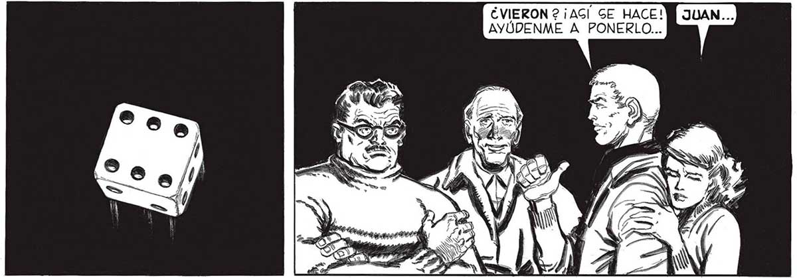
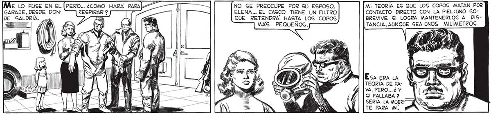
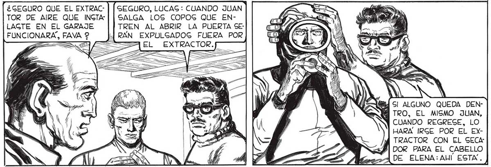

40 GARAJE, DESDE DONDE SALDRÍA. ¿GEGURO QUE EL EXTRAC: Ún Ac O UN DOG, ME GALVARIAN DE TENER QUE CORRER YO EL RIECGO. ERA POCA LA CHANCE DE GACARLOS PERO... ¿POR QUÉ NO? GEGURO, LUCAG: CUANDO JUAN EVIERON 2 ¡AGÍ' GE HACE! AYÚDENME A PONERLO... NO SE PREOCUPE POR SU ESPOSO, ELENA... EL CASCO TIENE UN FILTRO QUE RETENDRA HASTA LOG COPOS MAG PEQUEÑOG. LA SUERTE ESTABA ECHADA. HABÍA GANADO, PERO EL PREMIO NO PODÍA GER MENOG DEGEABLE: ERA, MUY POGIBLEMENTE, LA MUERTE EN LOG PROXIMOG DIEZ O QUINCE MINUTOG. MI TEORÍA EG QUE LOS COPOG MATAN POR CONTACTO DIRECTO CON LA PIEL:UNO GOBREVIVE Gl LOGRA MANTENERLOG A DIGTANCIA, AUNQUE GEA UNOS MILIMETROG TEORÍA DE FAVA. PERO... é Y Gl FALLABA ? GERÍA LA MUERTE PARA MÍ. "PERO ¿ CON QUÉ ELECTRICIDAD ANDARAN EL EXTRACTOR Y EL SECADOR? ¡Gl NOS QUEDAMOS SIN CORRIENTE ! TOR DE AIRE QUE INGTA | | SALGA LOS COPOG QUE ENLAGTE EN EL GARAJE TREN AL ABRIR LA PUERTA SEFUNCIONARA, FAVA 2 RAN EXPULGADOG FUERA POR EL EXTRACTOR. SI ALGUNO QUEDA DENTRO, EL MISMO JUAN, CUANDO REGRESE, LO HARA IRGE POR EL ExXTRACTOR CON EL SECA: DOR PARA EL CABELLO DE ELENA: AUI ESTA. ) ) y YA EGTA TODO R Fe SUELTO, ELENA E


